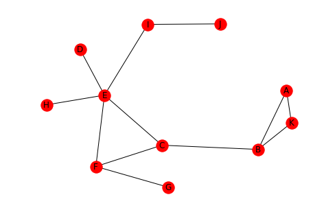
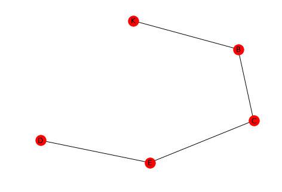
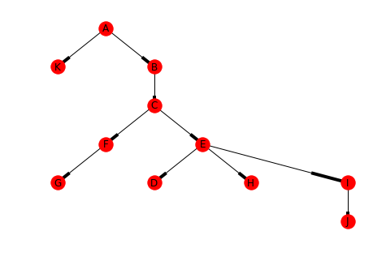
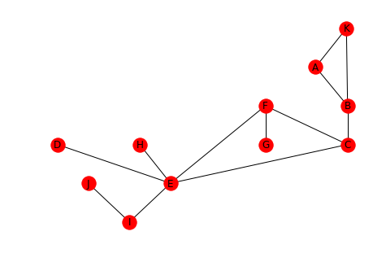
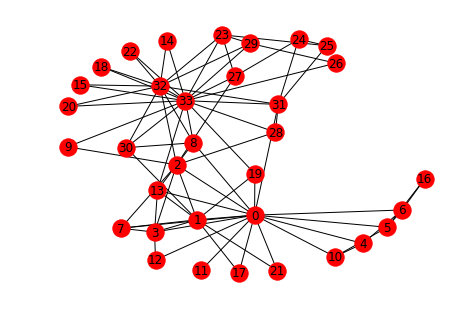

Distance in Social Networks
1 Introduction
When characterizing a graph one of the things to look at is how far apart the nodes are.
# from pypi import networkx
This will be the example network.
left = tuple("AAKBCCFEDEIE") right = tuple("KBBCFEGFEIJH") graph = networkx.Graph() graph.add_edges_from(list(zip(left, right))) networkx.draw(graph, with_labels=True)
2 Defining Distance
This section will look at how we can measure the distance between nodes.
2.1 Paths
A path is a sequence of nodes connected by edges. One path from D to K might be D-E-C-B-K.
left = tuple('DECB') right = tuple("ECBK") path = networkx.Graph() path.add_edges_from(list(zip(left, right))) networkx.draw(path, with_labels=True)
2.2 Distance
- The length of a path is the number of edges in it.
- The distance between two nodes is the length of the shortest path between them.
dk_shortest_path = networkx.shortest_path(graph, "D", "K") print(dk_shortest_path)
['D', 'E', 'C', 'B', 'K']
length = networkx.shortest_path_length(graph, "D", "K") print(length) assert len(dk_shortest_path) - 1 == networkx.shortest_path_length(graph, "D", "K")
4
As you can see the path we saw earlier is the shortest path and the distance from D to K is 4.
2.3 Breadth-First Search
One way to compute the distances from one node to all the other nodes is to create a tree using Breadth-First-search. Breadth-First search will eliminate any cycles and leave us with the shortest paths to each node.
This is the tree created for the node A.
tree = networkx.bfs_tree(graph, "A") positions = networkx.drawing.nx_agraph.graphviz_layout(tree, prog="dot") networkx.draw(tree, positions, with_labels=True)
print(networkx.shortest_path_length(graph, "A"))
{'J': 5, 'D': 4, 'H': 4, 'F': 3, 'K': 1, 'A': 0, 'B': 1, 'C': 2, 'E': 3, 'G': 4, 'I': 4}
Looking at the shortest path-lengths to A, you can see that J is is the furthest away, with 5 edges separating them, while B and K are the closest with only 1 hop.
3 Graph Distance
This looks at how you can answer questions about the graph as a whole.
3.1 Average Distance
One measure is the average of the distances between ever pair of nodes.
print(networkx.average_shortest_path_length(graph))
2.5272727272727273
The average distance for our example is around two and a half edges.
3.2 Diameter
The diameter of a graph is the maximum distance between any of the pairs of nodes. Note that distance is always the shortest path between nodes, so this isn't the longest path in the graph.
print(networkx.diameter(graph))
5
The greatest distance is 5 hops in our example.
3.3 Eccentricity
This is the largest distance between a node and all the other nodes.
print(networkx.eccentricity(graph))
{'J': 5, 'D': 4, 'H': 4, 'F': 3, 'K': 5, 'A': 5, 'B': 4, 'C': 3, 'E': 3, 'G': 4, 'I': 4}
Looking at the output we can see that A, J, and K all have eccentricities matching the diameter. According to the Online Etymology Dictionary, eccentric means an orbiting object that doesn't have the earth at the center of its orbit. More literally, it means out of center (or off center).
3.4 Radius
The radius is the minimum eccentricity in a graph.
print(networkx.radius(graph))
3
So the radius is the smallest of the largest distances for all the nodes.
3.5 Periphery
This is the set of nodes whose eccentricity is equal to the diameter (5 in our case).
print(networkx.periphery(graph))
['J', 'K', 'A']
Looking at the output and the graph, the diameter of the graph is the distance from A to J or K to J.
3.6 Center
This is the set of nodes whose eccentricity is equal to the radius of the graph (3 in this example).
print(networkx.center(graph))
['F', 'C', 'E']
positions = networkx.drawing.nx_agraph.graphviz_layout(graph, prog="dot") networkx.draw(graph, positions, with_labels=True)
Looking at the graph, you can see that F, C, and, E do in fact form the center triangle.
4 Karate Club
This looks at the network created by the relationships between members of a karate club that is on the verge of splitting up. Each node is a member of the club and the edges represent that the incident edges interacted with each other outside of the club (and were thus assumed to be friends). Members who didn't interact with each other outside of the club aren't represented in the data set.
The instructor wanted to raise fees while the officers didn't. Eventually the instructor was fired and his supporters left with him.
karate = networkx.karate_club_graph() networkx.draw(karate, with_labels=True)
networkx.draw_circular(karate, with_labels=True)

You can see that there are some central characters in the club, notably 0, 32, and 33.
degrees = ((node, karate.degree(node)) for node in karate.nodes()) degrees = ((node, degree) for node, degree in degrees if degree > 10) print("Node\tDegree") for node, degree in degrees: print("{}\t{}".format(node, degree))
| Node | Degree |
|---|---|
| 0 | 16 |
| 32 | 12 |
| 33 | 17 |
The cut-off of 10 degrees was somewhat arbitrary, there are two nodes with degrees 9 and 10 respectively, but you can see that these three nodes were the most connected members of the club.
4.1 What is the average distance?
print(networkx.average_shortest_path_length(karate))
2.4
The path lengths are relatively short, on average.
4.3 Eccentricity
print(networkx.eccentricity(karate))
{0: 3, 1: 3, 2: 3, 3: 3, 4: 4, 5: 4, 6: 4, 7: 4, 8: 3, 9: 4, 10: 4, 11: 4, 12: 4, 13: 3, 14: 5, 15: 5, 16: 5, 17: 4, 18: 5, 19: 3, 20: 5, 21: 4, 22: 5, 23: 5, 24: 4, 25: 4, 26: 5, 27: 4, 28: 4, 29: 5, 30: 4, 31: 3, 32: 4, 33: 4}